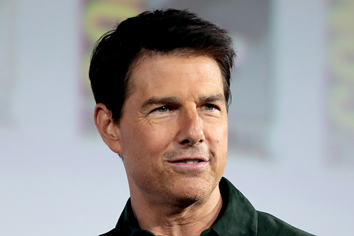

湯姆·克魯斯（英語：Tom Cruise，1962年7月3日—）全名湯瑪斯·克魯斯·馬波瑟四世（英語：Thomas Cruise Mapother IV），是知名美國籍男演員及電影製片人。作為世界上收入最多的演員之一，[1] 他獲得了多項榮譽，包含三次金球獎和榮譽金棕櫚獎，以及三次奧斯卡金像獎和英國電影學院獎提名。他的電影在北美擁有超過45億票房，在全球擁有超過110億美元票房，[2] 使他成為有史以來票房最高的巨星。[3] 而他主演的電影共有19次位列全球年度票房前十，為歷史第一。
克魯斯於1980年代開始他的演藝生涯，並在喜劇片《保送入學》（1983）和動作片《捍衛戰士》（1986）中取得突破。他因在《金錢本色》（1986）、《雨人》（1988）和《七月四日誕生》（1989）的演出而備受好評。他在《七月四日誕生》對羅恩·科維奇的刻畫，使他獲得第一個金球獎和奧斯卡最佳男主角提名。作為1990年代好萊塢的領軍人物，他出演了多部票房大賣的電影，包括劇情片《軍官與魔鬼》（1992）、驚悚片《黑色豪門企業》（1993）、恐怖片《夜訪吸血鬼》（1994）和愛情片《征服情海》（1996）。出於他在《征服情海》的演出，他再次獲得金球獎最佳男主角和奧斯卡獎提名。
克魯斯因其在劇情片《心靈角落》（1999）中飾演一名演說家的演出，第三次獲得金球獎和奧斯卡最佳男配角獎提名。從那時開始，他主要在科幻或動作電影中演出，確立自己動作第一巨星的地位，他在不可能的任務系列電影中八次飾演伊森·韓特。他在該類型的著名演出包含《香草天空》（2001）、《關鍵報告》（2002）、《末代武士》（2003）、《落日殺神》（2004）、《世界大戰》（2005）、《騎士出任務》（2010）、《神隱任務》（2012）、《遺落戰境》（2013）、《明日邊界》（2014）和《捍衛戰士：獨行俠》（2022）。 克魯斯曾經與咪咪·羅傑斯、妮可·基嫚和凱蒂·荷姆斯結婚。他有三名子女，其中兩名為收養，一名為與荷姆斯所生。